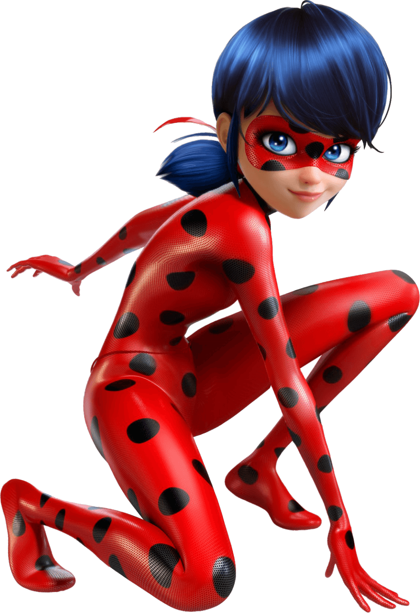
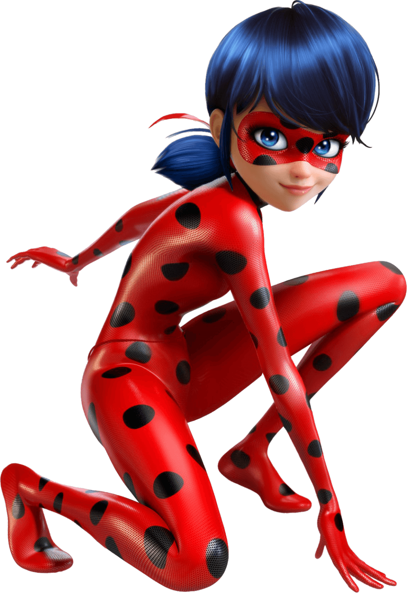
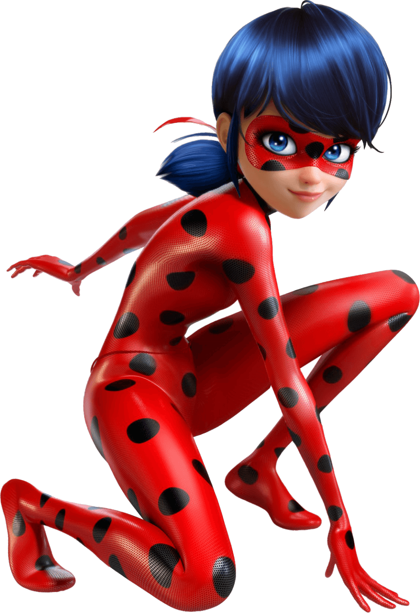
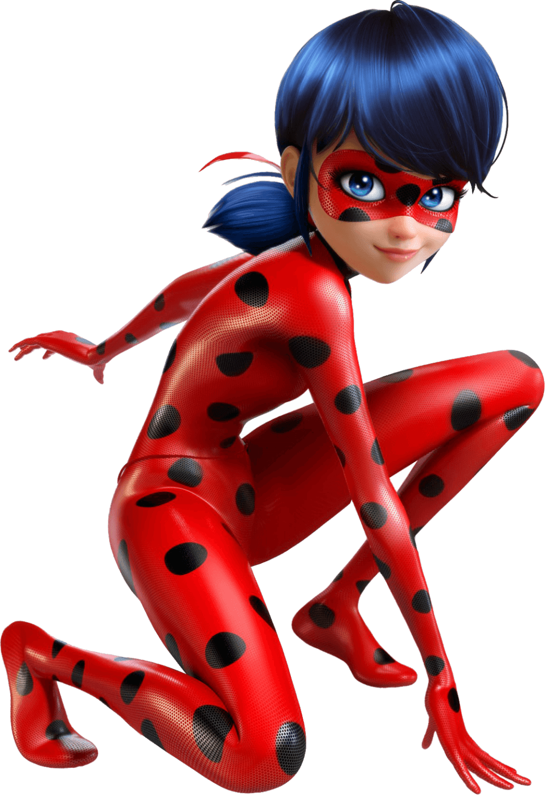

Маринетт Дюпен-Чен (фр. Marinette Dupain Cheng) — главная героиня мультсериала. Маринетт весёлая, радостная и немного неловкая, но пользуется уважением и авторитетом среди своих сверстников. Влюблена в Адриана, но стесняется в этом признаться из-за своей нервозности и смущения; её лучшая подруга Аля часто пытается помочь Маринетт заявить о своей любви к нему, хотя это всегда заканчивается неудачей. Она перевоплощается в супергероиню Леди Баг с помощью её квами по имени Тикки, чтобы защитить Париж от злодеев под влиянием акум, которых выпускает Бражник, и перьев, которые выпускает Маюра. Её особый дар, Талисман Удачи (Супер-Шанс), позволяет создать предмет, который помогает победить злодеев. Также онa может ловить акум и перья, изгонять из них тёмную энергию и после этого выпускать их на волю.
Леди Баг сражается со злодеями вместе с напарником Супер-Котом, не подозревая, что это её одноклассник Адриан. Маринетт ни разу не превращалась в супер-злодея. В эпизоде "Охотница за квами" Маринетт перевоплощалась в Мультимаус, в Леди Кошку в эпизоде "Рефлект Долл", в ДраконБаг в эпизоде "Битва Талисманов", в ПчелоБаг в эпизоде "Оптигами" и в Пегабаг в эпизоде "Сентипузырь".
Деятельность: |
Пол: |
Студентка Супергероиня Представитель класса Хранительница талисманов |
Женский |
Отношения: |
|
Друзья: |
Враги: |
Тикки Алья Сезер Адриан Агрест Нино Лейв Роуз Левилён Джулека Куффен Иван Брюэль Милен Апрэль Ким Ле Тьен Макс Канте Аликс Кубдель Натаниель Куртцберг Марк Ансьель Манон Шамак Лука Куффен Крис Лейв Сабрина Ренкомпри (ранее) Кагами Цуруги Зои Ли Все квами (кроме Дуусу и Нууру) |
Бражник Хлоя Буржуа Акуматизированные злодеи Лайла Росси Ксавье - Ив Ротт Боб Ротт Маюра |
Увлечения: |
|
Любит: |
Не любит: |
Джаггед Стоун Моду Хомяков Шить Творить Клара Россиньоль Адриан Агрест |
Хлоя Буржуа Лайла Росси Флирт Супер Кота Лжецов Когда другие девушки флиртуют с Адрианом Фильмы ужасов Романтические комедии |